Instalación de proteus 8.5
Primeros pasos:
Para comenzar descargamos el archivo “Proteus.rar” a través del siguiente enlace: Proteus.rar
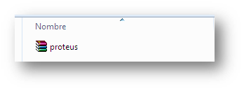Una vez descomprimido, se encontraran 4 archivos, 3 versiones de Proteus diferentes y una llamada “Librerías Proteus” el cual se hablará en otra presentación para su instalación
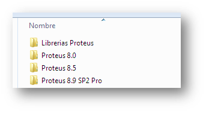Una vez descargado el archivo, dentro de la carpeta “Proteus 8.5” se encontraran dos archivos, uno donde se presenta la licencia y otra donde se encuentra el instalador:
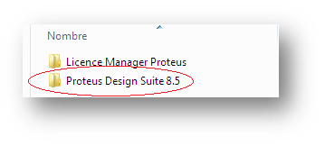 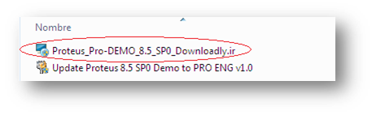 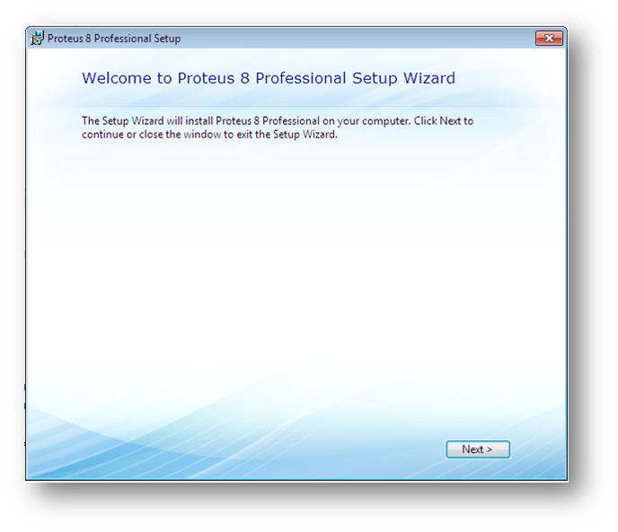Seguimos los pasos y luego seleccionamos “Use a locally installed license key”
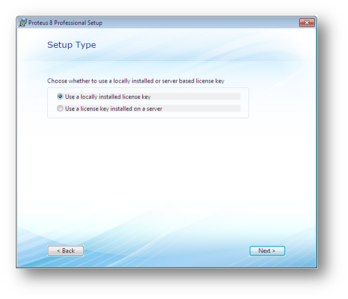 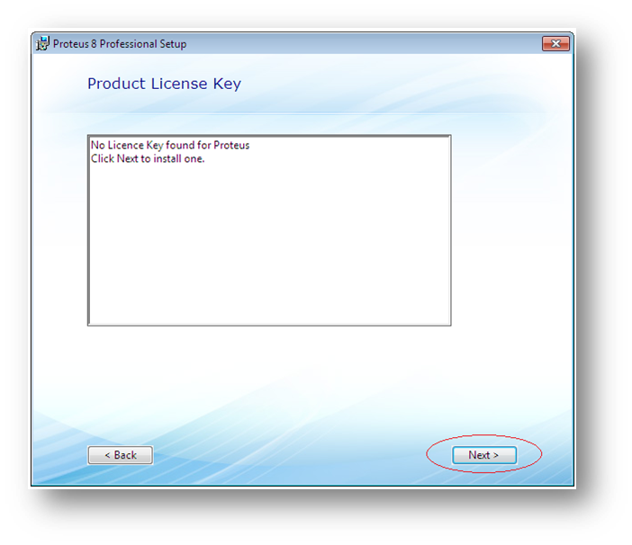Instalación de la licencia:
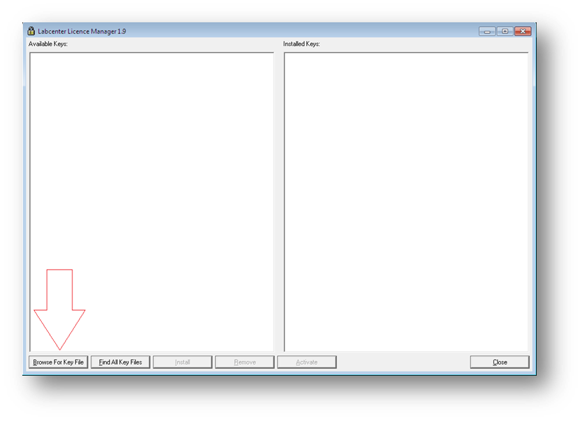Buscamos en la carpeta “Proteus 8.5” descargada anteriormente y ubicamos la carpeta “Licence Manager Proteus”
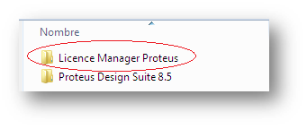 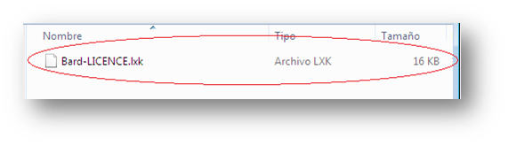Seguimos los pasos ...
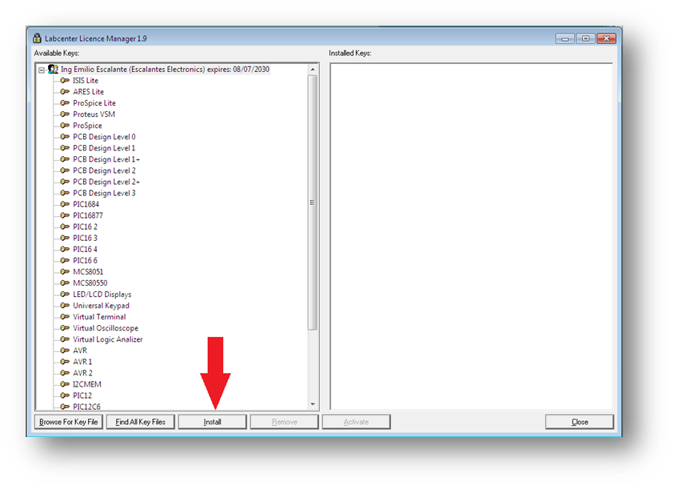 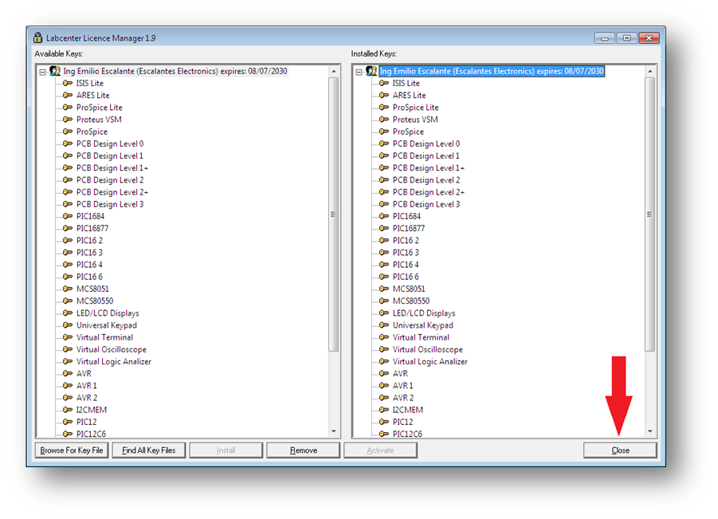 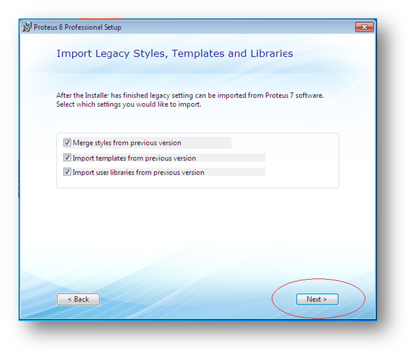
Luego, se inicia el proceso de instalación de proteus ...
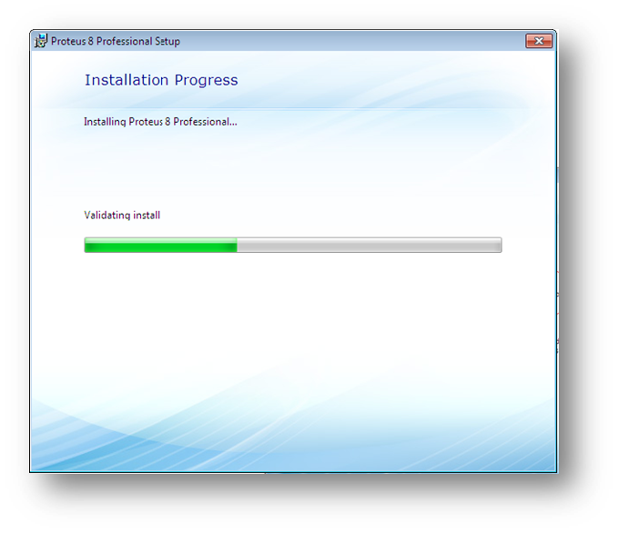Con lo que, Proteus ya queda instalado:
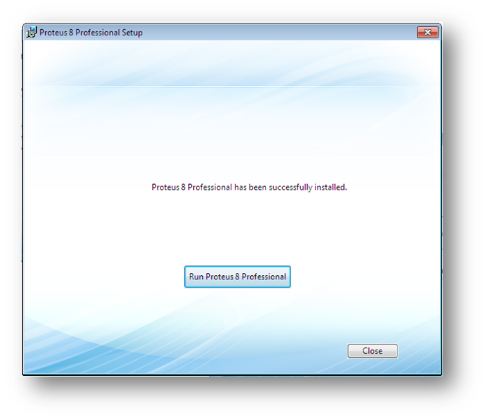Una vez instalado, corremos el programa y nos aseguramos que se encuentre en modo Demo
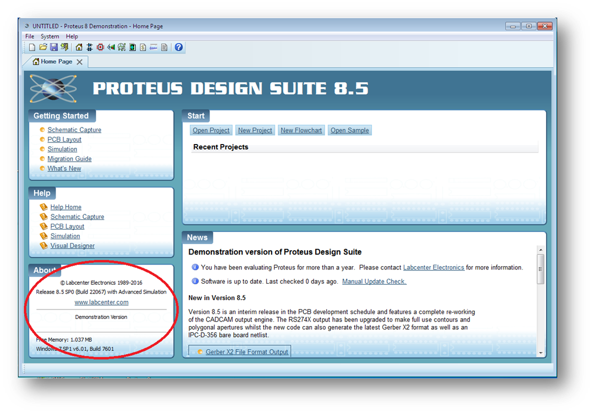Luego cerramos el programa y aplicamos la actualización ubicado en la carpeta “Proteus Design Suite 8.5” donde, en un principio, se ubico el instalador:
 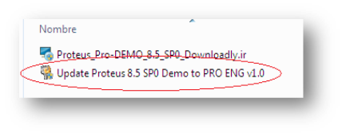
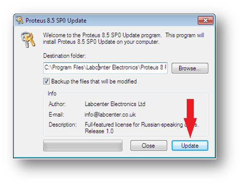
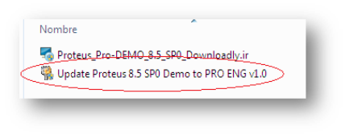
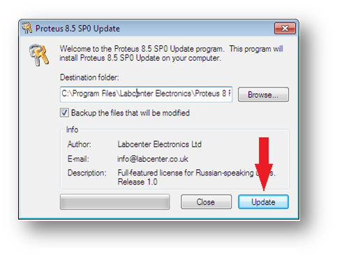
Abrimos de nuevo el programa y verificamos que la licencia se instalo correctamente
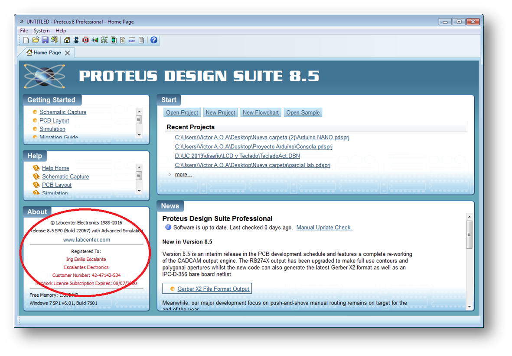En caso de que Proteus no reconozca las librerías instaladas
Puede que, en ocasiones, al instalar Proteus se presente este error:
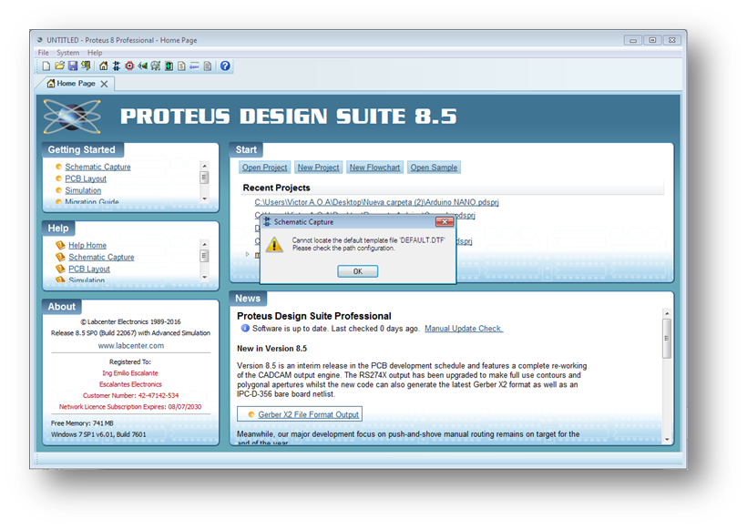Donde Proteus no encuentra las librerías instaladas
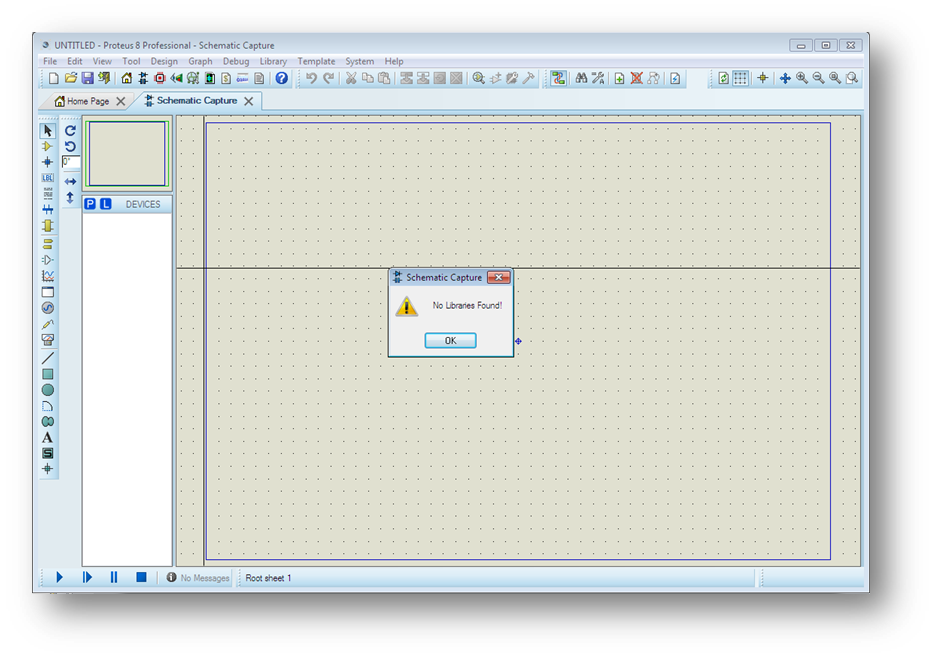Esto sucede debido a que no se instalaron en la carpeta correspondiente, por lo que, para darle solución, se procede de la siguiente manera:
- En disco local C: Archivos de Programa, copiar la carpeta “Labcenter Electronics” 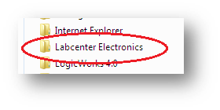
- Luego en disco local C:, dar click en “organizar” y luego en “Opciones de carpeta y búsqueda” 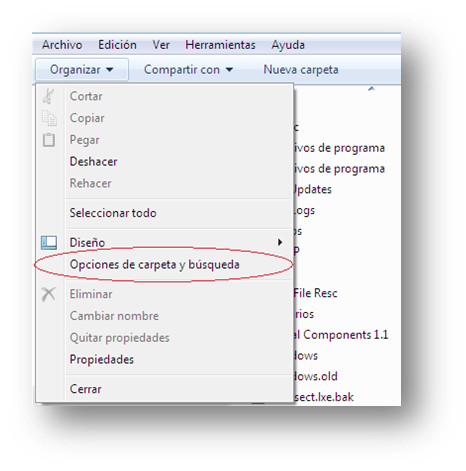
- Dar click en “ver” y seleccionar “Mostrar archivos, carpetas y unidades ocultos” 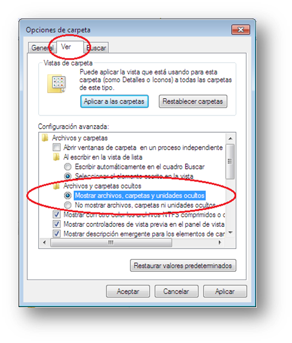
- Una vez dado “Aceptar” aparecerá una carpeta llamada “ProgramData” 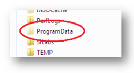
- Dentro de esta carpeta, pegamos la carpeta “Labcenter Electronics” 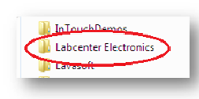
- Volvemos a abrir Proteus y verificamos que se haya dado solución al problema 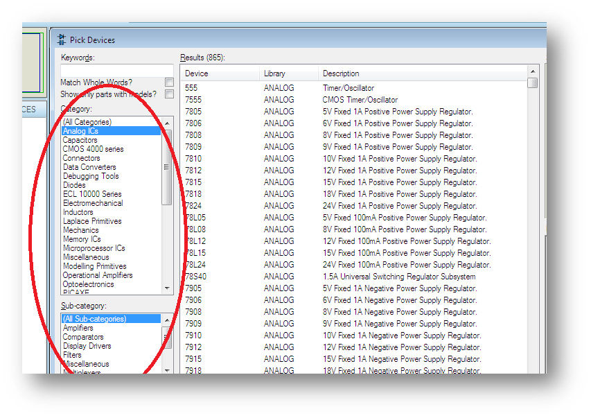